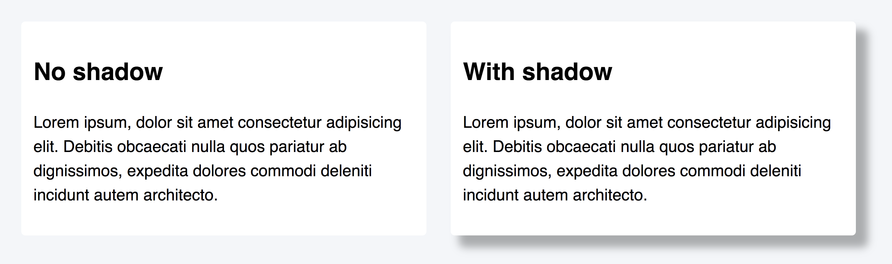

Тінь додає елементу ефект об'ємності і відчуття висоти. Тіні бувають зовнішні і внутрішні, розмиті і плоскі, одинарні і багатошарові.
Властивість box-shadow задає елементу одну або більше тіней. За замовчуванням розмір тіні збігається з розміром елемента, а її колір відповідає кольору його тексту.
box-shadow: <x-offset> <y-offset> <blur> <spread> <color>
See the Pen lesson-07-box-shadow by goit-academy (@goit-academy) on CodePen.
Використовуючи від'ємний радіус поширення (значення spread), можна стиснути тінь блоку, зробивши її меншою за розмір елемента, і задати зміщення тільки з однієї сторони.
See the Pen lesson-07-negative-spread by goit-academy (@goit-academy) on CodePen.
Якщо зовнішня тінь візуально піднімає елемент, то внутрішня тінь дозволяє додати ефект глибини, вдавлюючи елемент в інтерфейс. Синтаксис оголошення внутрішньої тіні аналогічний звичайній, але першим значенням необхідно вказати inset.
box-shadow: inset
Зміщення, розмитість і поширення тіні відбувається всередині елемента і візуально обмежено його рамкою.
See the Pen lesson-07-inner-shadow by goit-academy (@goit-academy) on CodePen.
На один елемент можна додати кілька тіней, вказавши їх через кому.
box-shadow: <x-offset> <y-offset> <blur> <spread> <color>,
<x-offset> <y-offset> <blur> <spread> <color>,
<x-offset> <y-offset> <blur> <spread> <color>,
...
Виходить багатошаровий пиріг, в якому перша тінь у списку розміщується найвище, остання - найнижче. Тобто, чим раніше вказана тінь, тим вище вона у шарах, і буде візуально перекривати всі наступні. Цей підхід дозволяє зробити дуже м'які і гарні тіні.
See the Pen lesson-07-box-shadow-multi by goit-academy (@goit-academy) on CodePen.
Для наочності задамо шарам тіні з попереднього прикладу різні кольори.
See the Pen lesson-07-box-shadow-multi-colored by goit-academy (@goit-academy) on CodePen.
Використовуючи тіні, псевдоелементи, а також трансформації і позиціонування, яке ми розглянемо далі у курсі, можна робити дуже цікаві ефекти. Наприклад, візуально загнуті кути картки.
See the Pen lesson-07-shadow-effects by goit-academy (@goit-academy) on CodePen.